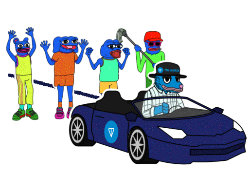

TRETT VISION

In the gritty streets of Brooklyn, Tired Trett, an opossum with a
heart full of resilience, navigates life with his four mischievous
adopted sons: Pepe, a cunning frog; Brett, a mysterious blue
creature; Andy, a rambunctious dog; and WOLF, a spirited landwolf.
Trett's journey as a single father began when his wife left,
leaving him to raise the boys alone. Their home is a makeshift
haven near a garbage can, where they survive by scavenging for
food and treasures. Their possessions tell a story of hardship and
hope: Pepe's half-broken computer, Andy's almost completely
ripped-apart book, Brett's collection of mismatched shoes, and
WOLF's prized, slightly functional flashlight. Among their
discoveries is ZEUS, an autistic dog they found behind a trashcan
when the children were young. Moved by compassion, they took ZEUS
in, not wanting the helpless dog to die alone. ZEUS has since kind
off become a part of their family. Trett, known as "Tired Trett"
for his perpetual exhaustion, juggles multiple jobs to keep his
boys fed and out of trouble. Despite the relentless grind, he
works tirelessly as a janitor at TON Headquarters, his weary eyes
always vigilant for his sons' next misadventure. The boys, known
as the "Boys Club Gang," often add to Trett's woes by stealing
money from his wallet to gamble on degenerate memecoins and play
dice on the streets. Yet, through sheer perseverance and an
indomitable spirit, Trett manages to create his own memecoin,
aptly named Tired Trett, on the TON chain. This stroke of
ingenuity turns their family's fortunes around, offering a glimmer
of hope amidst the chaos of their lives. Despite the constant
struggle and the boys' endless antics, Tired Trett's unwavering
love and determination shine through, binding their unconventional
family together against all odds.